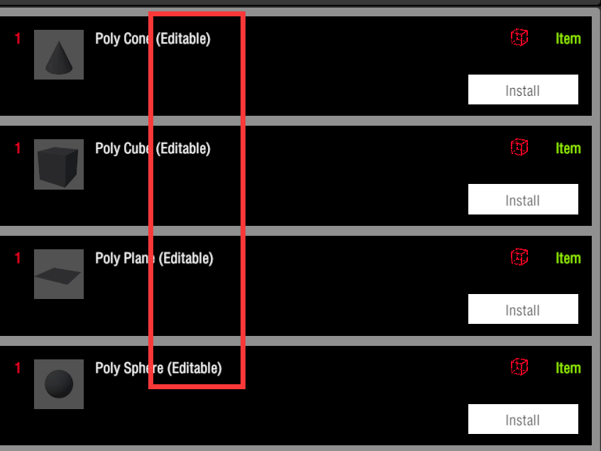
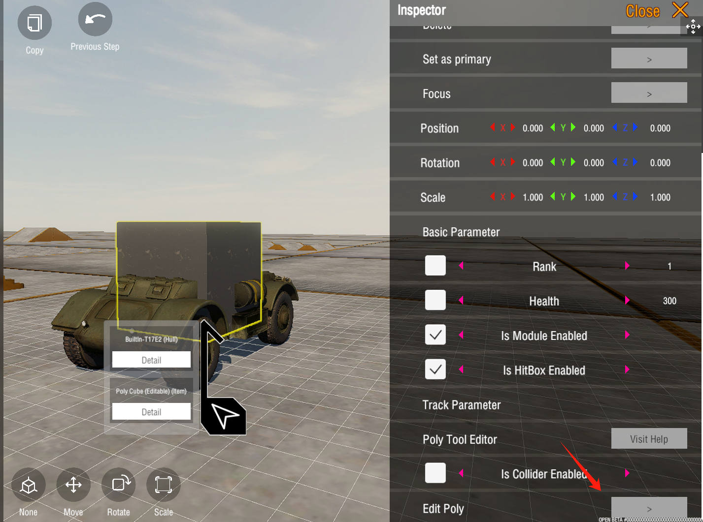
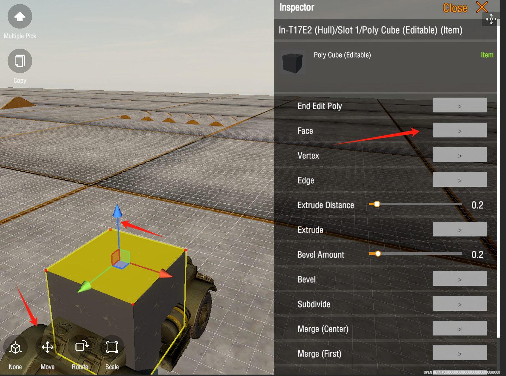
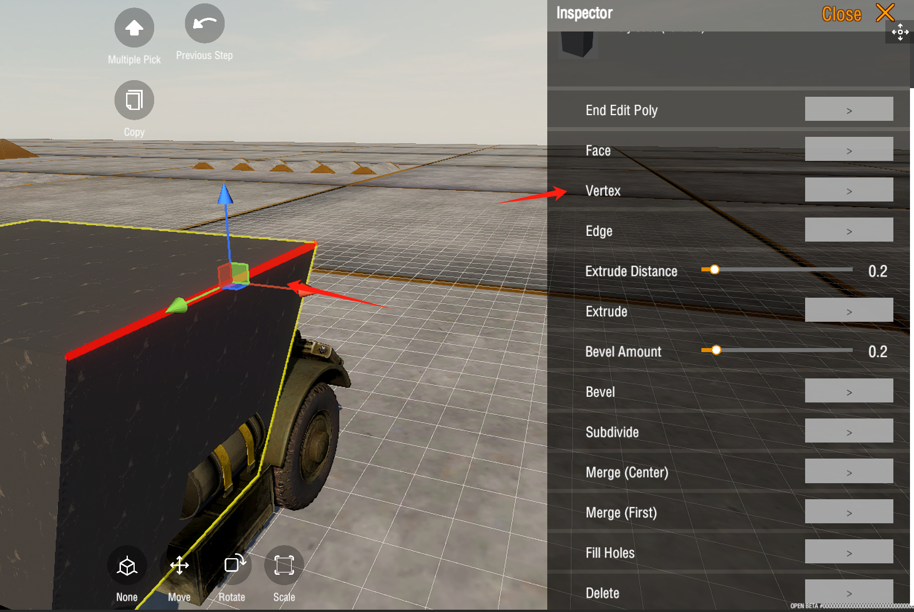
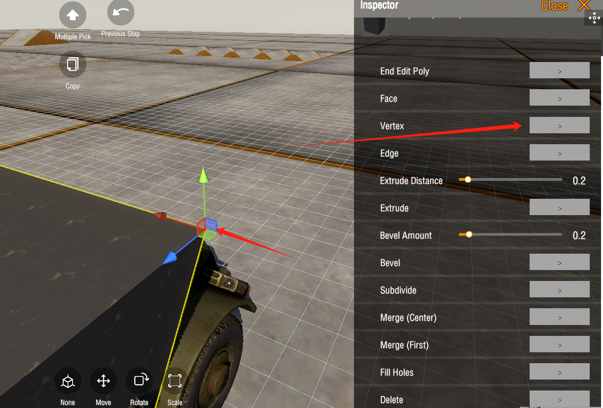
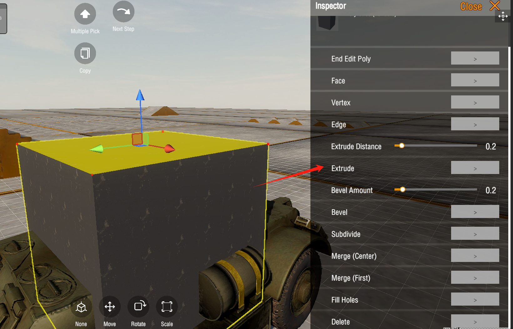
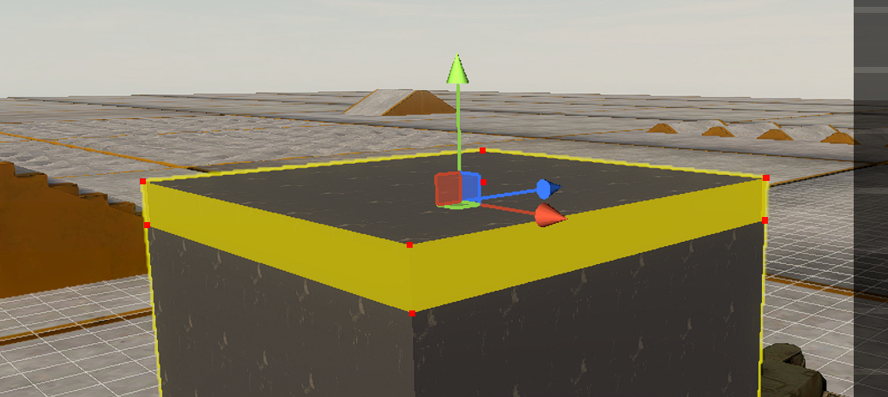
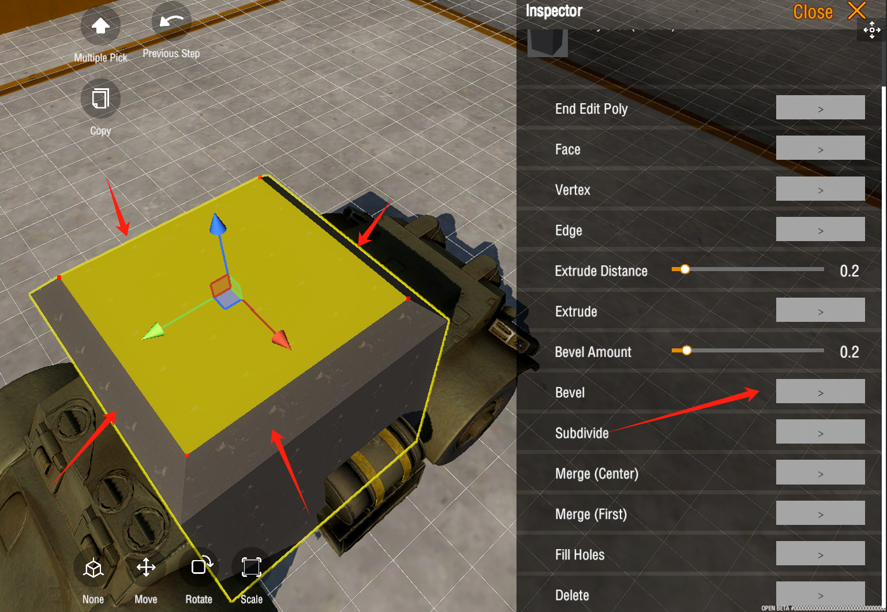

1. Poly Edit 建模工具
Use Editable Poly 使用可编辑多边形
In the Item tab, search for Editable, then install it onto the vehicle. Click the Edit Polygons button to enter edit mode.
在 Item 中搜索 可编辑，然后安装到载具上。点击编辑多边形按钮，即可进入编辑模式。


Basic Options 基础选项
Face 面
In the right-side inspector window, select the Face, choose the faces on the model, and then click Move. Drag the arrow to edit the position of the face. Similarly, you can rotate the face orientation and use the Scale tool to modify the size of the face.
在右侧窗口视图中选择面工具，选中模型上的面，然后点击移动。然后拖动箭头，即可编辑面的位置。同理，可以旋转面的朝向，以及通过缩放工具，修改面的大小。

Edge 边

Vertex 顶点

Operations 操作
Extrude 挤出功能
One of the most commonly used operations is used to extend a face. Select any face, then click the Extrude button. The face will move in its normal direction and extend out multiple new faces (as shown in the yellow area in the second image).
最常用的操作之一，用于扩展面。 选中任意一个面，然后点击挤出按钮，然后面会往其法线方向移动，并扩展出多个新的面。（如二图中的黄色区域）


Bevel 倒角功能
Bevel is used to create chamfers on the edges or vertices of a model. In the image below, the red marked area shows the generated bevel.
倒角用于在模型的边缘或顶点处创建斜角。下图中红色标记区域即生成的倒角。

This document is still under construction, please check back later. This feature is currently in development.
Future support will include:
- Importing obj files
- Models as external armor models
- Models as internal structures
The full modeling tool functionality is expected to be released in mid-July.
本文档还在建设中，请稍微回来再看。此功能目前仍处于开发阶段。
后续会支持 1. 导入 obj 2. 模型作为外部装甲模型 3. 模型作为内构。
预计于 7月中旬放出完整建模工具功能。